Motion · Ilustración · 2026
Banco Atlas
Día del Niño
Una animación dibujada a mano para la campaña de Banco Atlas por el Día del Niño.
Salutación · 18 sUna varita, una manta, una linterna y unos bloques: la infancia contada con trazo amarillo sobre el rojo de Banco Atlas.
Mi contribución
A partir del concepto de Periferia Comunicación, desarrollé el key visual, armé el storyboard y dibujé y animé a mano los objetos de cada escena: la varita, la manta, la linterna, los bloques y el cohete.
Desafío
Un banco hablando de regalos
Banco Atlas comunicaba beneficios con sus tarjetas en jugueterías y librerías. La pieza tenía que hablar de la infancia y mantener el tono de la marca, sin parecer una promoción.
Idea
El juego como aprendizaje
La idea parte de cosas simples: una manta puede ser un refugio y una linterna puede abrir todo un mundo. Los regalos también pueden enseñar a esperar, cuidar y elegir.
Proceso
Del storyboard al trazo
Storyboard del reel, con la secuencia de cada cuadro.
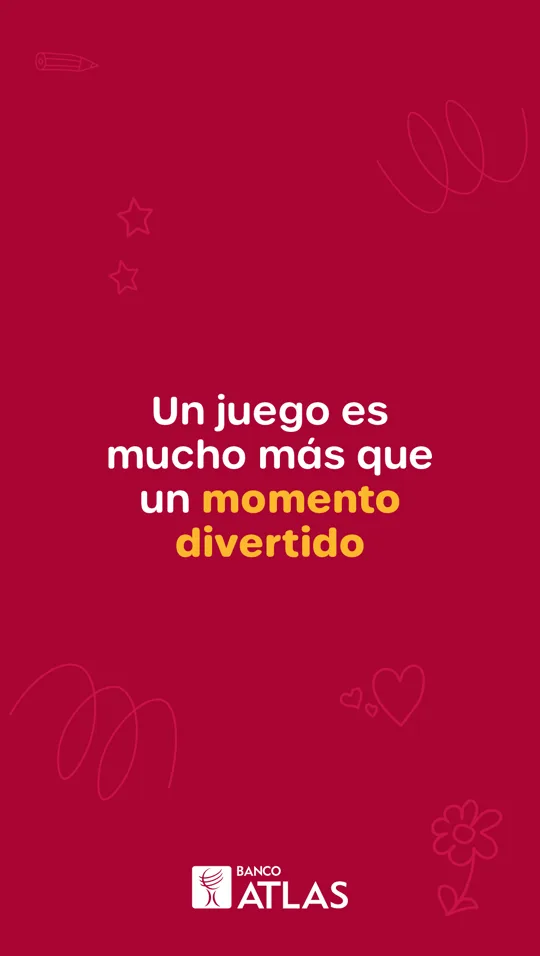
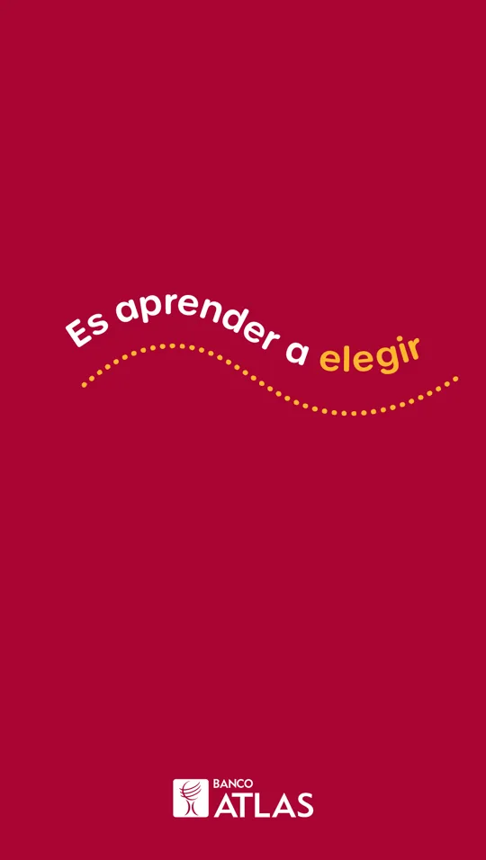
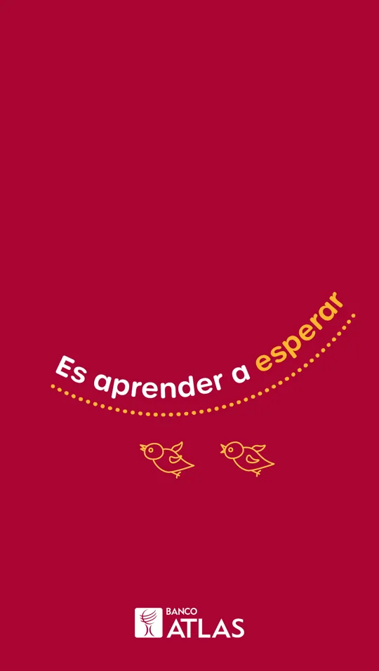
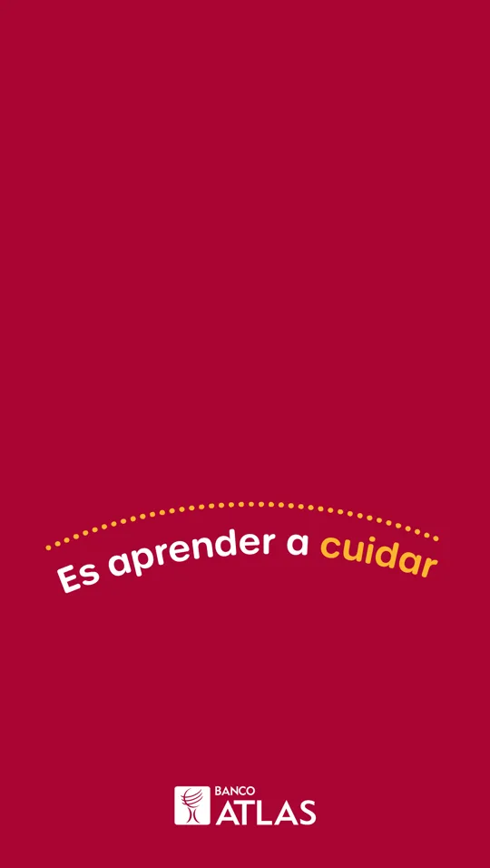
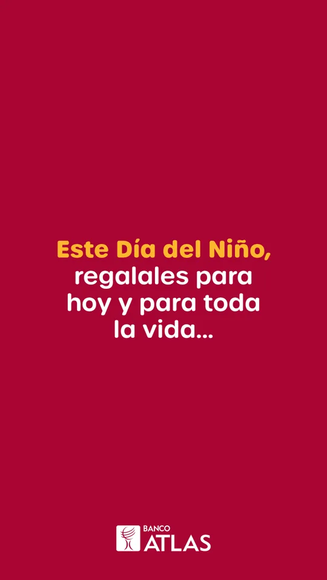
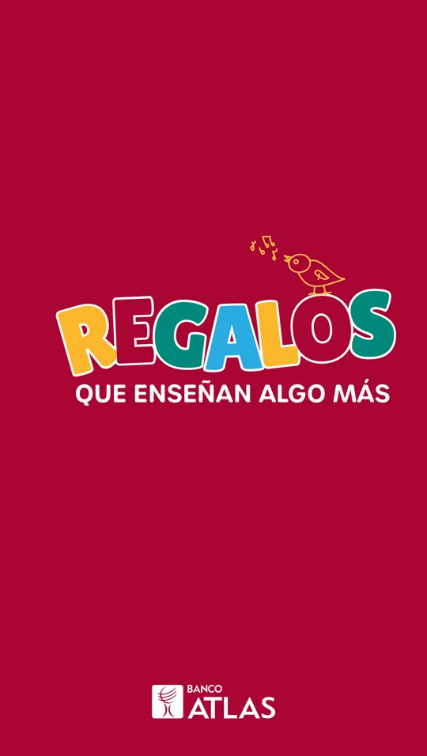
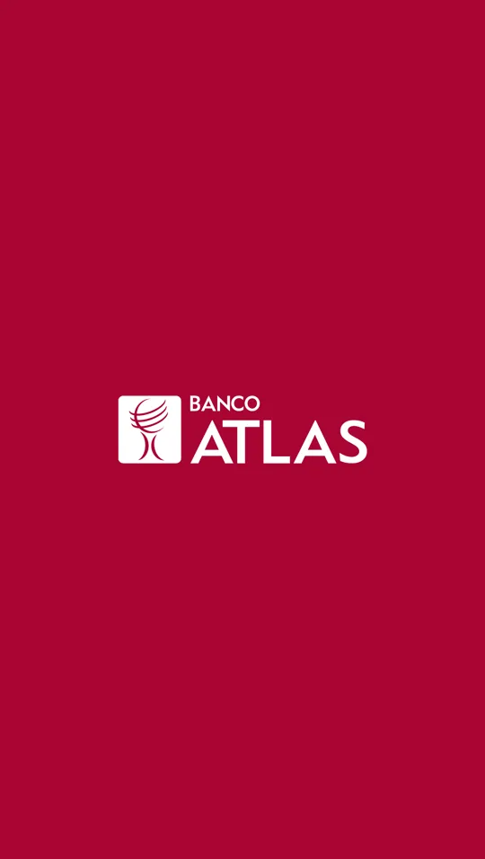
Storyboard del reel · 7 cuadros
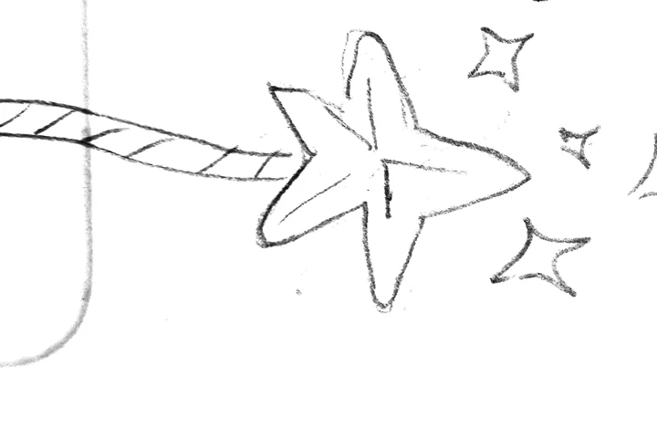
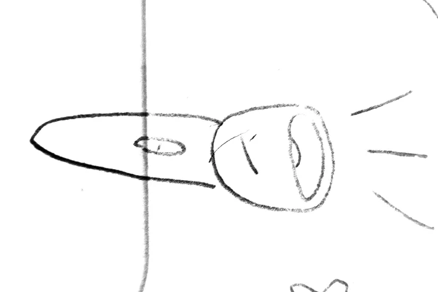
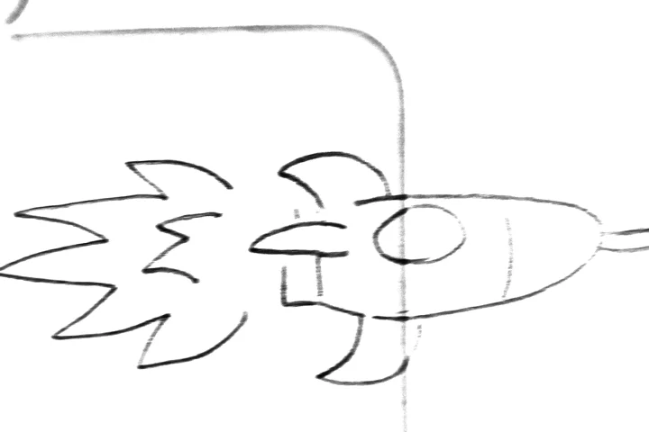
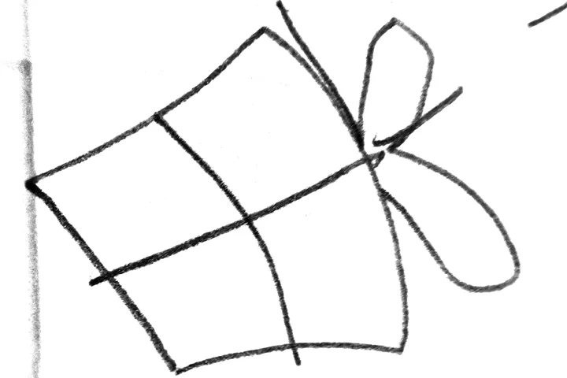
Bocetos de los objetos que se animan a mano
Reels
Tipografía en movimiento
Los reels suman la tipografía sobre caminos punteados y garabatos (pájaros, flores, corazones, estrellas), más un reel de beneficios con la misma gráfica.
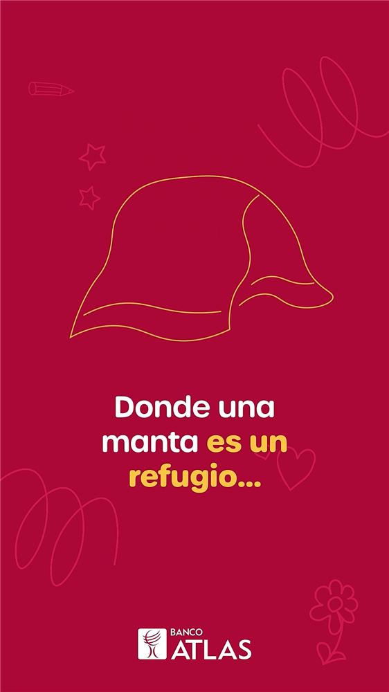
Créditos
- Cliente
- Banco Atlas
- Agencia
- Periferia Comunicación
- Concepto y textos
- Periferia Comunicación
- KV, storyboard, ilustración y animación
- Kevin Mancuello
Hablemos